La Semana Santa es la conmemoración anual cristiana de la Pasión, Muerte y Resurrección de Jesús de Nazaret. Por eso, es un período de intensa actividad litúrgica dentro de las diversas confesiones cristianas. Da comienzo el Domingo de Ramos y finaliza el Domingo de Resurrección,1 aunque su celebración suele iniciarse en varios lugares el viernes anterior (Viernes de Dolores) y se considera parte de la misma el Domingo de Resurrección. La fecha de la celebración es variable (entre marzo y abril según el año) ya que depende del calendario lunar. La Semana Santa va precedida por la Cuaresma, que finaliza en la Semana de Pasión donde se celebra la eucaristía en el Jueves Santo, se conmemora la Crucifixión de Jesús el Viernes Santo y la Resurrección en la Vigilia Pascual durante la noche del Sábado Santo al Domingo de Resurrección. Durante la Semana Santa tienen lugar numerosas muestras de religiosidad popular a lo largo de todo el mundo, destacando las procesiones y las representaciones de la Pasión.
 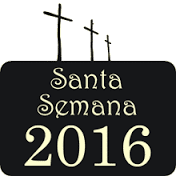
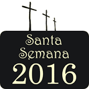
Cada religión tiene diferentes actividades para vivir la Semana Santa, algunos realizan procesiones, lectura de textos bíblicos, sermones y otros reuniones. La Semana Santa en el calendario es una fecha importantísima para los cristianos del mundo, que de acuerdo a sus creencias y tradiciones la viven en reflexión, comunión, redención o simplemente se toma como unas vacaciones cortas para pasarla en familia. La religión católica con 1 300 millones de seguidores en todo el mundo es la opción religiosa más profesada por los humanos del urbe. Los restantes mil millones de fieles pertenecen a otras religiones cristianas. En la región Puno también se encuentran todos los matices. En el catolicismo la Semana Santa, se inicia con el Domingo de Ramos, donde se bendicen las palmas, luego durante la semana se realizan misas y confesiones, el Jueves Santo se celebra la Misa Crismal, más tarde la celebración de la Cena del Señor, y concluye con la adoración al Santísimo Sacramento. El Viernes Santo, se lleva adelante el Sermón de las Tres Horas, más tarde la Celebración de la Pasión de Señor, concluyendo con la procesión del Santo Sepulcro. Mientras que el Sábado Santo se realiza la Solemne Vigilia Pascual y el domingo la Misa de Pascua de Resurreción.
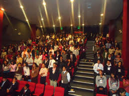
Por otro lado, la Semana Santa para los miembros de la Iglesia de Jesucristo de los Santos de los últimos Días más conocidos como mormones, les sirve para reflexionar como cada semana, sobre el sacrificio que hiciera Cristo y partir de ello afianzar la unión familiar. Entre la actividad más importante a realizarse en esta semana, es que los jóvenes, entre niños y adolescentes se van de campamento, a lugares fuera de la ciudad donde puedan reflexionar y revalorar la vida en familia y la importancia de su presencia en la vida cristiana. En la Iglesia Adventista del Séptimo Día, en Semana Santa reafirman su experiencia de fe diaria, aprovechan para reforzar su evangelización, además tienen reuniones todos días a partir de las 6.30 de la tarde, tomando importancia el Jueves donde realizan una vigilia en vez de subir al cerro. En cambio los Testigos de Jehová conmemoran la Cena del Señor, el día en que esta se instituyó, con la copa de vino y los panes ázimos que Cristo mencionó como representación de su cuerpo y de su sangre. “No es que no celebremos la Semana Santa simplemente hacemos una conmemoración de la muerte de Nuestro Señor Jesucristo después de la puesta del sol, siguiendo el mandato Bíblico...” aclaró un miembro. La otra parte en la iglesia Cristiano Evangélico, se cree que estas fiestas son paganas, ya que con el tiempo se fueron “Cristianizando”; sin embargo el hecho de celebrar Semana Santa, en forma voluntaria, es parte de la libertad que Cristo da. En esta fecha los evangélicos adoran al Señor y para evangelizar, realizan oraciones, celebran la cena del Señor, entonan himnos; en domingo de resurrección recuerdan la victoria del Señor sobre la muerte. En fin, todas la religiones cristianas celebran la Semana Santa y afianzan su fe en Cristo, pero entre todas resaltan los católicos por la forma cómo recuerdan esta fecha; la vía crucis y la misma crucifixión de Cristo son las enormes muestras de que la humanidad aún no perdido el amor a Dios.
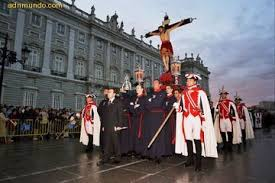
Con una inversión de 361 mil pesos, el gobierno municipal de Atlixco ha comenzado los trabajos para realizar el “Tapete Monumental de Flores de Primavera” con motivo de la Semana Santa, temporada en la que esperan una afluencia de más de 10 mil visitantes y una derrama económica de 16 millones de pesos. Considerada una obra artesanal y de gran atractivo para el municipio de Atlixco, el tapete será hecho con 165 mil plantas en más de 50 mil macetas, con recursos propios del ayuntamiento, el cual será inaugurado el próximo 17 de marzo y podrá admirarlo hasta el 4 de abril. La directora de Turismo, Minerva Schiavón Núñez, informó que para la realización de esta obra artesanal se llevó a cabo un proceso de licitación denominado “Compra de flores y plantas del proyecto Tapete Monumental de Primavera Atlixco”. La empresa ganadora es la que preside Simón Romualdo Robelo Guevara. Cabe recordar que a inicios de la administración se inició con este proyecto para realizar tapetes monumentales frente al palacio municipal, con la intención de ser un atractivo más para los turistas locales, nacionales y extranjeros que visitan Atlixco. “En esta ocasión, la temática mostrará la panorámica de Atlixco y un Cristo, con referencia a la Semana Santa”, refirió Schiavón Núñez tras señalar que espera que en esta temporada vacacional haya una derrama económica mayor a los 16 millones de pesos, lo que contribuirá en gran medida a la economía de las familias de la región.
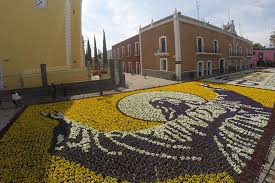Los engrillados son hombres que para pagar una penitencia o agradecer un milagro, recorren más de 3 kilómetros de calles del municipio, en su camino deben ir descalzos, cargando en sus hombros cadenas de más de 100 kilos, con espinas incrustadas en su cuerpo, vistiendo únicamente una capucha y un calzoncilllo negros.
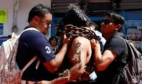
Aunado a lo anterior, lo único que pueden consumir durante su marcha son limones, para mantenerse hidratados, mientras que algunas personas les acomodan las cadenas, o por segundos, les ayudan con el peso de éstas. Cada penitente lleva en sus manos una charola en la que quienes atestiguan el acto colocan monedas, al final del día, ese dinero es donado a la iglesia. Este 2016 se espera la participación de más de 80 hombres oriundos del municipio de Atlixco, pero que radican en municipios cercanos como Izúcar de Matamoros, en otros estados, incluyendo Guadalajara, Tlaxcala y Estado de México, e incluso en Estados Unidos.
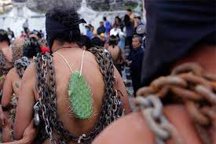La procesión del silencio Otro de los atractivos del municipio de Atlixco durante Semana Santa es la procesión del silencio, que se realizará el próximo viernes santo, y que se ha llevado a cabo desde hace 20 años.
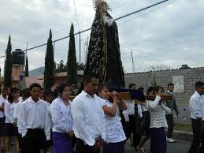
El recorrido, que iniciará en la junta auxiliar de Santa Lucía Cosamaloapan y culminará en la comunidad de Nexatengo, tendrá una duración de aproximadamente 3 horas, tiempo en el que participarán aproximadamente 30 mil personas. Quienes este año han decidido cargar las imágenes es importantes deberán haberse confesado, los hombres deberán ir vestidos de negro y las mujeres con falda morada y blusa blanca.
La celebración de Semana Santa es para los poblanos una de las conmemoraciones más importantes del año cristiano; durante estos días aquellas personas que profesan alguna de las diferentes confesiones de la fe cristiana acuden a las iglesias más emblemáticas de Puebla para recordar la Pasión, Muerte y Resurrección de Jesús de Nazaret.Una de los actos mas significativos durante la semana santa es la tradicional Procesión de Viernes santo, misma que este 2016 cumple 25 años y que es considerada de las mas grandes del país. Historia De acuerdo al Arqueólogo e Historiador, Eduardo Merlo, en 1861 con lujo de violencia se suspendió la Procesión, la cual databa pocos años después de la fundación de la ciudad Puebla de Los Ángeles, considerada la segunda de la nueve España, pero la más rica del Virreinato y con sus imágenes procesionales extraordinarias. Las andas eran de plata; candelabros, ramilletes y palios, todo lo que tenía que ver con la procesión era fino, elegante y rico, el cual se había conservado, pero en 1857 se aplicaron las leyes de Reforma que prohibían las manifestaciones religiosas en la calle, sin embargo, no se aplicó estrictamente. En 1861 Juan Bautista Traconis, gobernador militar de Puebla amenazó con cárcel a los que intentaran participar en la procesión. Como escarmiento decomisó las andas, los ramilletes, los palios, es decir, todo lo que plata se lo llevó, y no permitió que saliera la procesión, Fue hasta 1991 que un grupo de miembros de la Universidad Popular Autónoma de Puebla (UPAEP) vio la necesidad de revivir esta tradición que databa desde los orígenes de la ciudad. Fue así como se retomó esta procesión que ha ido creciendo cada año, gracias a la devoción de los colaboradores y fieles devotos.
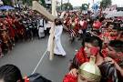Los Festejos de Semana Santa de Iztapalapa son Patrimonio Cultural Intangible de la Ciudad de México. Desde hace 172 años, millones de mexicanos y turistas extranjeros han rememorado en el Cerro de la Estrella de Iztapalapa, la pasión de Cristo, la historia de cómo el hijo de Dios sufrió por el perdón de los pecados de la humanidad. Desde 1843 en el Cerro de la Estrella o Huizachtepetl se conmemora la Pasión de Cristo. Diez años atrás, en 1833, los pobladores afectados y preocupados por la epidemia que azolaba a su comunidad, invocaron las imágenes de Cristo que se veneraban en sus respectivas ermitas de los barrios originales de Iztapalapa para que terminara la ola de muerte que se cernía entre sus familiares. A los pocos días, según cuenta la historia, la mortandad por el cólera cesó. Además del milagro de haber parado la epidemia, en San Lorenzo, uno de los pueblos de Iztapalapa, el Cristo invocado los favoreció con un agua milagrosa, pues del pie de un ahuehuete brotó un manantial y con el agua que de ahí emanó curaron a los enfermos y a la gente de los pueblos del sur.
Ven a formar parte de una de las más grandes representaciones del Vía Crucis en México y seguramente del mundo entero. En todo San Luis Potosí se organizan un buen número de eventos culturales y religiosos para conmemorar la Semana Santa, desde turismo religioso y cultural, como el espectáculo de la Fiesta de la Luz, museos e iglesias, hasta turismo de aventura. Sin embargo, el evento más importante y de mayor tradición entre los lugareños tiene lugar el Viernes Santo, cuando se realiza la Procesión del Silencio, una de las más arraigadas debido a su solemnidad y misticismo. No importa que no seas católico, ven a vivir una experiencia digna de recordar en la que mientras más cosas sucedan, más querrás conocer el origen y significado de lo que estás presenciando. Desde ya casi 60 años, alrededor de dos mil personas de 28 diferentes cofradías (asociaciones de fieles católicos) se reúnen el Viernes Santo para acompañar esta procesión durante la cual portan emblemas, imágenes religiosas referentes al Vía Crucis y visten los colores distintivos de su compañía. Cada una de las “Cofradías” lleva una imagen representativa del Vía Crucis (camino a la cruz) de Jesucristo y de los misterios del Santo Rosario. La procesión inicia al anochecer, justo a las 20 horas, cuando una multitud sale a las calles en completo silencio guardando luto por la Pasión y Muerte de Cristo, según la tradición católica. La Plaza del Carmen es el punto de reunión de las “Cofradías” e inicio donde las tropas tocan sus clarines decretando el inicio del evento y ordenando así un silencio sepulcral. La iluminación de las calles baja para dar paso a los cirios que portan los fieles y que dan a la procesión un carácter de mayor dramatismo.
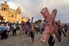Cuando se habla de las tradicionales procesiones de Semana Santa, el Pueblo Mágico de Taxco, al sur de Guerrero, es uno de los primeros sitios que vienen a la mente. El arraigo de las fiestas de la Semana Mayor inició, de acuerdo a los cronistas y documentos, entre los años 1598 y 1600, cuando se otorgaron los permisos para celebrar la primera procesión. Actualmente, no en vano se piensa en Taxco para vivir las celebraciones de esta temporada, ya que es aquí donde se llevan a cabo algunas de las procesiones más solemnes e impactantes de todo México. Por ello te presentamos de manera concreta los detalles que no puedes perder si te encuentras en la “tierra donde se juega a la pelota”
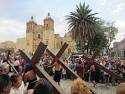Dentro de la gama de festejos religiosos para los Oaxaqueños la cuaresma y la Semana Santa reviste gran significado. El Primer Viernes de Cuaresma la Festividad del Señor de Las Misericordias en el Templo de San Juan de Dios, el Segundo Viernes de Cuaresma la Festividad del Señor de Las Maravillas en el Templo de La Defensa , el Cuarto Viernes de Cuaresma la Festividad de la Samaritana en la Ciudad de Oaxaca, el Quinto Viernes de Cuaresma la festividad del Señor de las Peñas en el Templo del Carmen Alto y la Festividad del Señor San Lázaro en la Villa de San Antonino Castillo Velasco.
Es una procesión de carácter luctuoso en el cual se le da el pésame a la Virgen Morena. Su característica principal es que tantos los participantes como los espectadores mantienen silencio al paso de las imágenes de la procesión. Así se demuestra el respeto a la muerte de Jesús. La procesión pasa por las calles muy importantes de la ciudad: Andador Turístico, Xolotl, García Vigil, Morelos y termina en la iglesia de la Sangre de Cristo, todo el recorrido es hecho con un orden programado.